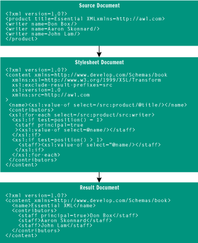

This article assumes you’re familiar with XML and XPath
Code for this article: Box0800.exe
(32KB)
SUMMARY
The XSL Transformations (XSLT) specification defines an XML-based language
for expressing transformation rules that map one XML document to another.
XSLT has many of the constructs found in traditional programming languages,
including variables, functions, iteration, and conditional statements.
In this article you’ll learn how to use the XSLT instructions and template
rules, manage namespaces, control transformation output, use multiple stylesheets,
and employ pattern-matching with template rules. A sidebar explains how
to access XSLT from MSXML using the IXSLTemplate and IXSLProcessor interfaces.
This article was adapted from the forthcoming book Essential XML (Chapter 5), by Don Box, Aaron Skonnard, and John Lam © 2000 Addison Wesley Longman. Reproduced by permission of Addison Wesley Longman. All rights reserved.
The XML Schema definition language is poised to become the dominant way to describe the type and structure of XML documents. XML Schemas provide the basic infrastructure for building interoperable systems based on XML since they give you a common language for describing XML that is based on proven software engineering principles. That stated, the expressiveness of XML Schemas makes it possible (if not likely) that multiple organizations modeling the same set of domain-specific abstractions will come up with different schema documents. Yes, this problem could be solved via industry consortia defining canonical schema for each domain, but until that happens, dealing with multiple schema definitions of the same basic information will be a fact of life. Enter XSL Transformations (XSLT).
 The XSLT specification
defines an XML-based language for expressing transformation rules from
one class of XML document to another. The XSLT language can be thought
of as a programming language, and there are at least two XSLT execution
engines currently available that can directly execute an XSLT document
as a program. But, XSLT documents are also useful as a general-purpose
language for expressing transformations from one schema type to another.
In fact, we could imagine using an XSLT document as one form of input to
an arbitrary XML translation engine.
The XSLT specification
defines an XML-based language for expressing transformation rules from
one class of XML document to another. The XSLT language can be thought
of as a programming language, and there are at least two XSLT execution
engines currently available that can directly execute an XSLT document
as a program. But, XSLT documents are also useful as a general-purpose
language for expressing transformations from one schema type to another.
In fact, we could imagine using an XSLT document as one form of input to
an arbitrary XML translation engine.
 XSLT excels
at mapping one XML-based representation onto another. Consider the XML
document shown in Figure
1 (which will be referred to often throughout our discussion).
XSLT excels
at mapping one XML-based representation onto another. Consider the XML
document shown in Figure
1 (which will be referred to often throughout our discussion).
----------------------------------------
Figure 1
XML Source Document
<?xml version="1.0"?>
<product title="Essential XML" xmlns="http://awl.com">
<writer name='Don Box' />
<writer name='Aaron Skonnard'/>
<writer name='John Lam'/>
</product>
----------------------------------------
Note that the element names belong to a namespace (and schema) defined
by Addison Wesley Longman (the publisher of our book). Now consider this
second representation of the same information:
<?xml version="1.0"?> <content xmlns="http://www.develop.com/Schemas/book"> <name>Essential XML</name> <contributors> <staff principal="true">Don Box</staff> <staff>Aaron Skonnard</staff> <staff>John Lam</staff> </contributors> </content> |
This time the element names belong to a namespace (and schema) defined by DevelopMentor (the home of the authors).
 The two documents
just shown appear to contain roughly the same information. However, appearances
can often be deceiving. Without human intervention, it is impossible to
algorithmically determine whether there is any correlation whatsoever between
the two underlying schema, even in the presence of similar or identical
local element and attribute names. Once a human capable of understanding
the semantics of the two schema has determined that there is in fact some
relationship, it would be useful to have a language for describing the
transformations necessary to convert instances of one schema into instances
of the other.
The two documents
just shown appear to contain roughly the same information. However, appearances
can often be deceiving. Without human intervention, it is impossible to
algorithmically determine whether there is any correlation whatsoever between
the two underlying schema, even in the presence of similar or identical
local element and attribute names. Once a human capable of understanding
the semantics of the two schema has determined that there is in fact some
relationship, it would be useful to have a language for describing the
transformations necessary to convert instances of one schema into instances
of the other.
 One way to
describe these transformations is to simply write code in a traditional
programming language. Figure
2 shows an example of a Document Object Model (DOM)-based program written
in the Java language that translates the first document into the second.
One way to
describe these transformations is to simply write code in a traditional
programming language. Figure
2 shows an example of a Document Object Model (DOM)-based program written
in the Java language that translates the first document into the second.
----------------------------------------
Figure 2
DOM-based Translation
----------------------------------------
import org.w3c.dom.*;
Document transform(Document source) throws Exception {
String tns = "http://www.develop.com/Schemas/book";
DOMImplementation dom = source.getImplementation();
Document target = dom.createDocument(tns, "content",
null);
Element sourceRoot = source.getDocumentElement();
String title = sourceRoot.getAttribute("title");
Element e1 = target.createElementNS(tns, "name");
e1.appendChild(target.createTextNode(title));
target.getDocumentElement().appendChild(e1);
e1 = target.createElementNS(tns,"contributors");
boolean bFirst = false;
for (Node author = sourceRoot.getFirstChild();
author != null; author = author.getNextSibling())
{
if (author.getNodeType() != Node.ELEMENT_NODE)
continue;
String name = ((Element)author).getAttribute("name");
Element e2 = target.createElementNS(tns, "staff");
e2.appendChild(target.createTextNode(name));
if (!bFirst)
e2.setAttributeNS("", "principal", "true");
e1.appendChild(e2);
bFirst = true;
}
target.getDocumentElement().appendChild(e1);
return target;
}
----------------------------------------
While this program is functional, it is only readable by virtual machines and, assuming the source code is provided, humans that can read Java-language code. Moreover, this program is very brittle and would require a significant amount of modification to track the independent evolution of both the source and target schemas.
 In contrast,
consider the XSLT document in Figure
3 that accomplishes the same task as the previous Java-language program.
In contrast,
consider the XSLT document in Figure
3 that accomplishes the same task as the previous Java-language program.
----------------------------------------
Figure 3
XSLT Translation
----------------------------------------
<?xml version="1.0"?> <content xmlns="http://www.develop.com/Schemas/book" xmlns:xsl="http://www.w3.org/1999/XSL/Transform" xsl:exclude-result-prefixes='src' xsl:version='1.0' xmlns:src="http://awl.com"> <name><xsl:value-of select="/src:product/@title"/></name> <contributors> <xsl:for-each select='/src:product/src:writer'> <xsl:if test='position() = 1' > <staff principal='true' ><xsl:value-of select="@name"/></staff> </xsl:if> <xsl:if test='position() > 1'> <staff><xsl:value-of select="@name"/></staff> </xsl:if> </xsl:for-each> </contributors> </content> ----------------------------------------This XML document reflects both the source and target schemas and can be fed to an XSLT processor to translate instances of the source schema into instances of the target schema. As shown here, schema transformations are described by implementing an exemplar of the target schema in terms of its changes from the source. More importantly, this document can be read using a standard XML parser and can act as input to a wide variety of processing software, not just XSLT transformation engines.
 As Figure
3 illustrates, simply using XML does not ensure inter-operation. Yes,
the world now agrees on where the angle brackets go. But being able to
interpret anything beyond that is a much tougher problem to solve. XML
Schemas give you the tool for representing type definitions, but in the
absence of a common schema, human intervention is still needed to bridge
organizational boundaries. XSLT provides an XML-centric way to build that
bridge.
As Figure
3 illustrates, simply using XML does not ensure inter-operation. Yes,
the world now agrees on where the angle brackets go. But being able to
interpret anything beyond that is a much tougher problem to solve. XML
Schemas give you the tool for representing type definitions, but in the
absence of a common schema, human intervention is still needed to bridge
organizational boundaries. XSLT provides an XML-centric way to build that
bridge.
XSLT Basics
 XSLT is an
XML-based language that describes transformations from XML documents into
arbitrary text-based formats (which may or may not be XML). As shown in
Figure 4, XSLT assumes that three documents are in use: the source document,
the XSLT stylesheet document, and the result document. The source document
is simply a well-formed XML document that provides the input for the transformation.
The stylesheet document is an XML document that uses the XSLT vocabulary
for expressing transformation rules. The result document is a text document
that is produced by running the source document through the transformations
found in the XSLT stylesheet.
XSLT is an
XML-based language that describes transformations from XML documents into
arbitrary text-based formats (which may or may not be XML). As shown in
Figure 4, XSLT assumes that three documents are in use: the source document,
the XSLT stylesheet document, and the result document. The source document
is simply a well-formed XML document that provides the input for the transformation.
The stylesheet document is an XML document that uses the XSLT vocabulary
for expressing transformation rules. The result document is a text document
that is produced by running the source document through the transformations
found in the XSLT stylesheet.
|  |
| Figure 4. XSLT Transformation Process |
 The XSLT stylesheet
contains one or more XSLT templates. A template is a collection of literal
result elements and XSLT instructions. Literal result elements are elements
that are copied more or less verbatim into the result document. XSLT instructions
are well-known elements that alter the processing of the template. Figure
5 shows the complete list of XSLT instructions. XSLT instructions and
other constructs are always qualified by the XSLT namespace URI (http://www.w3.org/1999/XSL/Transform),
which is typically mapped to the namespace prefix xsl.
The XSLT stylesheet
contains one or more XSLT templates. A template is a collection of literal
result elements and XSLT instructions. Literal result elements are elements
that are copied more or less verbatim into the result document. XSLT instructions
are well-known elements that alter the processing of the template. Figure
5 shows the complete list of XSLT instructions. XSLT instructions and
other constructs are always qualified by the XSLT namespace URI (http://www.w3.org/1999/XSL/Transform),
which is typically mapped to the namespace prefix xsl.
 An XSLT stylesheet
can be written as either a single-template literal result element or as
an explicit stylesheet. The former is simply an exemplar of the target
schema with namespace-qualified XSLT instructions added. The latter is
an XSLT-specific document format whose root element is xsl:stylesheet.
The explicit stylesheet will be discussed in the Template-based Programming
section later in this article.
An XSLT stylesheet
can be written as either a single-template literal result element or as
an explicit stylesheet. The former is simply an exemplar of the target
schema with namespace-qualified XSLT instructions added. The latter is
an XSLT-specific document format whose root element is xsl:stylesheet.
The explicit stylesheet will be discussed in the Template-based Programming
section later in this article.
 Literal result
element-based stylesheets support a simple subset of the more flexible
and expressive xsl:stylesheet vocabulary. The following is the simplest
possible XSLT stylesheet written as a literal result element:
Literal result
element-based stylesheets support a simple subset of the more flexible
and expressive xsl:stylesheet vocabulary. The following is the simplest
possible XSLT stylesheet written as a literal result element:
<?xml version='1.0' ?> <doc>Hello, World</doc> |
This stylesheet produces the same result document independent of the source document. Like the classic program from Kernighan and Richie, this version is extremely useless and produces the same output no matter what input is fed to it.
The xsl-copy and xsl-value Instructions
 The easiest
way to include content from the source document is via the xsl:copy-of
instruction. This instruction works much like XInclude's include element
(which is remotely similar to external parsed entities). The primary difference
is that xsl:copy-of is integrated into the XPath context used by XSLT.
The easiest
way to include content from the source document is via the xsl:copy-of
instruction. This instruction works much like XInclude's include element
(which is remotely similar to external parsed entities). The primary difference
is that xsl:copy-of is integrated into the XPath context used by XSLT.
 Consider the
following XSLT literal result element:
Consider the
following XSLT literal result element:
<?xml version='1.0' ?> <doc xmlns:xsl='http://www.w3.org/1999/XSL/Transform' xsl:version='1.0' ><xsl:copy-of select='/book/author'/></doc> |
The rules of XSLT indicate that the xsl:copy-of element
will be replaced by the node-set produced by the select XPath expression.
Assuming that the following source document is supplied as input
<?xml version="1.0"?> <book title="Essential XML" > <author name='Don' age='25' canadian='false'/> <author name='Aaron' age='19' canadian='false'/> <author name='John' age='20' canadian='true'/> </book> |
the result document would look like this:
<?xml version='1.0' ?> <doc> <author name='Don' age='25' canadian='false'/> <author name='Aaron' age='19' canadian='false'/> <author name='John' age='20' canadian='true'/> </doc> |
 The xsl:copy-of
instruction is ideal for copying node-sets, however, it is somewhat cumbersome
for copying text from the source document. For this, XSLT provides two
mechanisms: one for including source text as attribute [children], the
other for including source text as element [children].
The xsl:copy-of
instruction is ideal for copying node-sets, however, it is somewhat cumbersome
for copying text from the source document. For this, XSLT provides two
mechanisms: one for including source text as attribute [children], the
other for including source text as element [children].
 All attributes
of literal result elements are interpreted as attribute value templates,
which are simply strings that contain embedded XPath expressions that are
evaluated to produce result text. XSLT treats the { and } characters specially
when they appear as attribute [children]. When the { character is encountered,
the subsequent characters (up to the closing }) are interpreted as a string-value
XPath expression. For example, had the following attribute appeared in
the literal result element
All attributes
of literal result elements are interpreted as attribute value templates,
which are simply strings that contain embedded XPath expressions that are
evaluated to produce result text. XSLT treats the { and } characters specially
when they appear as attribute [children]. When the { character is encountered,
the subsequent characters (up to the closing }) are interpreted as a string-value
XPath expression. For example, had the following attribute appeared in
the literal result element
bookname='The book is {/book/@title}'
|
the corresponding attribute in the result document would look like this:
bookname='The book is Essential XML' |
 To escape
the { and } characters in attribute [children], you must use a redundant
{ or } character to signal that no attribute value template is present.
For example, the following attribute from a literal result element
To escape
the { and } characters in attribute [children], you must use a redundant
{ or } character to signal that no attribute value template is present.
For example, the following attribute from a literal result element
curlies='{{}}'
|
would expand to this in the result document:
curlies='{}'
|
 Attribute
value templates are also allowed on a small subset of XSLT instructions.
(You can tell immediately whether a given XSLT instruction attribute accepts
attribute value templates by the presence of the surrounding { } in the
syntax guide for that instruction and attribute in the XSLT specification
or the chart in Figure
5.)
Attribute
value templates are also allowed on a small subset of XSLT instructions.
(You can tell immediately whether a given XSLT instruction attribute accepts
attribute value templates by the presence of the surrounding { } in the
syntax guide for that instruction and attribute in the XSLT specification
or the chart in Figure
5.)
----------------------------------------
Figure 5
XSLT Instructions
| Instruction | Syntax | Description |
| xsl:copy-of |
<xsl:copy-of select = expression /> |
Emits the node-set corresponding to the select expression. |
| xsl:value-of |
<xsl:value-of select = string-expression disable-output-escaping = "yes" | "no" /> |
Emits the string corresponding to the select expression. |
| xsl:if |
<xsl:if test = boolean-expression> <!- - Content: template - -> </xsl:if> |
Evaluates the template if and only if the test expression evaluates to true. |
| xsl:choose |
<xsl:choose> <!- - Content: (xsl:when+, xsl:otherwise?) - -> </xsl:choose> |
Evaluates the template from the first xsl:when clause whose test expression evaluates to true. If none of the test expressions evaluate to true, then the template contained in the xsl:otherwise clause is evaluated. |
| xsl:for-each |
<xsl:for-each select = node-set-expression> <!- - Content: (xsl:sort*, template) - -> </xsl:for-each> |
Evaluates the template against each node in node-set returned by the select expression. The order of evaluation can be influenced using one or more xsl:sorts. |
| xsl:call-template |
<xsl:call-template name = qname> <!- - Content: xsl:with-param* - -> </xsl:call-template> |
Invokes the template rule named by name. |
| xsl:variable |
<xsl:variable name = qname select = expression> <!- - Content: template - -> </xsl:variable> |
Declares a variable named name and initializes it using the select expression or template. |
| xsl:text |
<xsl:text disable-output-escaping = "yes" | "no"> <!- - Content: #PCDATA - -> </xsl:text> |
Emits the text found in #PCDATA. Escaping of the five built-in entities is controlled using disable-output-escaping. |
| xsl:number |
<xsl:number
level = "single" | "multiple" | "any"
count = pattern
from = pattern
value = number-expression
format = { string }
lang = { nmtoken }
letter-value = { "alphabetic" | "traditional" }
grouping-separator = { char }
grouping-size = { number } />
|
Emits a number based on the XPath number expression found in value. |
| xsl:copy |
<xsl:copy use-attribute-sets = qnames> <!- - Content: template - -> </xsl:copy> |
Copies the current context node (and associated namespace nodes) to the result tree fragment. |
| xsl:apply-templates |
<xsl:apply-templates select = node-set-expression mode = qname> <!- - Content: (xsl:sort | xsl:with-param)* - -> </xsl:apply-templates> |
Invokes the best-match template rules against the node-set returned by the select expression. |
| xsl:apply-imports | <xsl:apply-imports /> | Promotes the current stylesheet in import precedence. |
| xsl:message |
<xsl:message terminate = "yes" | "no"> <!- - Content: template - -> </xsl:message> |
Emits a message in a processor-dependent manner. |
| xsl:fallback |
<xsl:fallback> <!- - Content: template - -> </xsl:fallback> |
Evaluates the template when the parent instruction/directive is not supported by the current processor. |
| xsl:comment |
<xsl:comment> <!- - Content: template - -> </xsl:comment> |
Emits an XML comment containing the template as its character data. |
| xsl:processing-instruction |
<xsl:processing-instruction
name = { ncname }>
<!- - Content: template - ->
</xsl:processing-instruction>
|
Emits an XML processing instruction whose [target] is name and whose [children] are based on template. |
| xsl:element |
<xsl:element
name = { qname }
namespace = { uri-reference }
use-attribute-sets = qnames>
<!- - Content: template - ->
</xsl:element>
|
Emits an XML element whose [local name] is name, whose [namespace URI] is namespace, and whose [children] are based on template. |
| xsl:attribute |
<xsl:attribute
name = { qname }
namespace = { uri-reference }>
<!- - Content: template - ->
</xsl:attribute>
|
Emits an XML attribute whose [local name] is name, whose [namespace URI] is namespace, and whose [children] are based on template. |
 The { and
} only receive special treatment when they appear as attribute [children].
To include source text as element [children], you must use the xsl:value-of
instruction. This instruction is similar to xsl:copy-of,
the primary difference being that the xsl:value-of select
expression is converted to a string prior to replacement.
The { and
} only receive special treatment when they appear as attribute [children].
To include source text as element [children], you must use the xsl:value-of
instruction. This instruction is similar to xsl:copy-of,
the primary difference being that the xsl:value-of select
expression is converted to a string prior to replacement.
 Consider the
following literal result element:
Consider the
following literal result element:
<?xml version='1.0' ?> <doc xmlns:xsl='http://www.w3.org/1999/XSL/Transform' xsl:version='1.0' ><xsl:value-of select='/book'/></doc> |
This XSLT stylesheet indicates that the content of the doc element should
consist of the text found by running the XPath expression /book against
the source document. Since the select expression is a node-set, it is implicitly
converted to a string prior to insertion using the XPath conversion rules.
The following is the result document that corresponds to this XSLT stylesheet:
<?xml version='1.0' ?> <doc/> |
 Note that
because the source document contained no character data as element [children],
the select expression /book yielded the empty string. Had the select expression
been /book/author/@name, the result document would have looked like this
Note that
because the source document contained no character data as element [children],
the select expression /book yielded the empty string. Had the select expression
been /book/author/@name, the result document would have looked like this
<?xml version='1.0' ?> <doc>Don</doc> |
since the node-set to string conversion rules state that the first node is converted to a string-value.
Conditional Evaluation Instructions
 The xsl:copy-of
and related instructions are simple mechanisms for importing content from
the source document. XSLT also provides a set of conditional evaluation
instructions that should be familiar to developers coming from procedural
programming languages. The xsl:if instruction is equivalent
to the if statement in C++ and the Java language. The xsl:choose,
xsl:when,
and xsl:otherwise instructions are the equivalent to switch,
case, and default commands in C++ and the Java language.
The xsl:copy-of
and related instructions are simple mechanisms for importing content from
the source document. XSLT also provides a set of conditional evaluation
instructions that should be familiar to developers coming from procedural
programming languages. The xsl:if instruction is equivalent
to the if statement in C++ and the Java language. The xsl:choose,
xsl:when,
and xsl:otherwise instructions are the equivalent to switch,
case, and default commands in C++ and the Java language.
 The simplest
of these is, of course, the xsl:if instruction. An element
representing an xsl:if instruction must have a test attribute that contains
a Boolean XPath expression. If this expression evaluates to true, then
the [children] of the xsl:if element (which is itself an
XSLT template) will be processed. If the expression evaluates to false,
then the [children] of the xsl:if element are ignored.
The simplest
of these is, of course, the xsl:if instruction. An element
representing an xsl:if instruction must have a test attribute that contains
a Boolean XPath expression. If this expression evaluates to true, then
the [children] of the xsl:if element (which is itself an
XSLT template) will be processed. If the expression evaluates to false,
then the [children] of the xsl:if element are ignored.
 Consider the
following XSLT literal result element:
Consider the
following XSLT literal result element:
<?xml version='1.0' ?> <doc xmlns:xsl='http://www.w3.org/1999/XSL/Transform' xsl:version='1.0'> <xsl:if test='count(//author) > 4'> <cacophony/> </xsl:if> </doc> |
This XSLT stylesheet uses the xsl:if instruction to test the number
of author elements. If the source document has more than four author elements,
the result document will look like this:
<?xml version='1.0' ?> <doc><cacophony/></doc> |
If the source document has four or fewer author elements, the result
document will look like this:
<?xml version='1.0' ?> <doc/> |
Note that the XPath expression used in the test attribute is a Boolean expression similar to that found in an XPath predicate, rather than a full-blown XPath location path.
 The xsl:choose
instruction provides the functionality of a Java-language or C++ switch
statement. The xsl:choose instruction has one or more xsl:when
clauses and an optional xsl:otherwise clause. The xsl:when
and xsl:otherwise elements are represented as [children]
of a containing xsl:choose element. Each xsl:when
element can have a test attribute that contains a Boolean XPath expression.
Unlike a Java-language or C++ switch, multiple xsl:when clauses
may have tests that evaluate to true. To resolve the case of having more
than one clause being true, XSLT only allows the first xsl:when clause
whose test is successful to be processed.
The xsl:choose
instruction provides the functionality of a Java-language or C++ switch
statement. The xsl:choose instruction has one or more xsl:when
clauses and an optional xsl:otherwise clause. The xsl:when
and xsl:otherwise elements are represented as [children]
of a containing xsl:choose element. Each xsl:when
element can have a test attribute that contains a Boolean XPath expression.
Unlike a Java-language or C++ switch, multiple xsl:when clauses
may have tests that evaluate to true. To resolve the case of having more
than one clause being true, XSLT only allows the first xsl:when clause
whose test is successful to be processed.
 Take a look
at the following XSLT literal result element:
Take a look
at the following XSLT literal result element:
<?xml version='1.0' ?> <doc xmlns:xsl='http://www.w3.org/1999/XSL/Transform' xsl:version='1.0'> <xsl:choose> <xsl:when test='count(//author) = 1'> <soloist/> </xsl:when> <xsl:when test='count(//author) < 5'> <ensemble/> </xsl:when> <xsl:otherwise> <cacophony/> </xsl:otherwise> </xsl:choose> </doc> |
If the source document has exactly one author element, the result document
will look like this:
<?xml version='1.0' ?> <doc><soloist/></doc> |
If instead the source document has between two and four author elements
(or no author elements at all), the result document will look like this:
<?xml version='1.0' ?> <doc><ensemble/></doc> |
Under any other circumstances, the result document will look like this:
<?xml version='1.0' ?> <doc><cacophony/></doc> |
 Note that
the xsl:otherwise has no test clause and fills the role of
the default clause from a Java-language or C++ switch statement. Also note
that the order of xsl:when clauses is important. Had the
two xsl:when clauses appeared in reverse order, the <soloist/>
element would never be emitted, as the expression
Note that
the xsl:otherwise has no test clause and fills the role of
the default clause from a Java-language or C++ switch statement. Also note
that the order of xsl:when clauses is important. Had the
two xsl:when clauses appeared in reverse order, the <soloist/>
element would never be emitted, as the expression
count(//author) = 1 |
would be masked by the expression ahead of it
count(//author) < 5 |
since 1 is less than 5.
Repetition and Looping Instructions
 In addition
to conditional instructions, XSLT also provides instructions for repetition
and looping. The most basic of these instructions is xsl:for-each,
which relies on an XPath expression to produce a node-set that controls
the iteration of the loop. When an xsl:for-each element is
encountered, the XPath expression found in its select attribute is evaluated.
Each node from the resultant node-set is then fed into the [children] of
the xsl:for-each element for further processing.
In addition
to conditional instructions, XSLT also provides instructions for repetition
and looping. The most basic of these instructions is xsl:for-each,
which relies on an XPath expression to produce a node-set that controls
the iteration of the loop. When an xsl:for-each element is
encountered, the XPath expression found in its select attribute is evaluated.
Each node from the resultant node-set is then fed into the [children] of
the xsl:for-each element for further processing.
 Consider this
XSLT literal result element:
Consider this
XSLT literal result element:
<?xml version='1.0' ?> <doc xmlns:xsl='http://www.w3.org/1999/XSL/Transform' xsl:version='1.0'> <xsl:for-each select='/book/author'> <by/> </xsl:for-each> </doc> |
Assuming the source document in Figure
1, the following result document will be produced:
<?xml version='1.0' ?> <doc><by/><by/><by/></doc> |
This xsl:for-each example is not all that interesting because its content does not rely on the selected node from the node-set. Accessing content from within an xsl:for-each instruction requires a bit more explanation.
 XPath expressions
that appear in XSLT stylesheets are evaluated relative to a context. This
context consists of at least an XPath node and node-set. For absolute location
paths, this context is largely immaterial. For relative location paths,
however, this context means everything. For example, the following XSLT
instruction requires some notion of which node you are talking about and
the node-set to which it belongs:
XPath expressions
that appear in XSLT stylesheets are evaluated relative to a context. This
context consists of at least an XPath node and node-set. For absolute location
paths, this context is largely immaterial. For relative location paths,
however, this context means everything. For example, the following XSLT
instruction requires some notion of which node you are talking about and
the node-set to which it belongs:
<xsl:value-of select='position()' /> |
 For the examples
shown prior to this discussion of the xsl:for-each instruction,
the context node is the root node of the source document and the context
node-set is the set that contains only the root node. But certain XSLT
constructs can change the context used to evaluate XPath expressions. The
xsl:for-each instruction is one such construct.
For the examples
shown prior to this discussion of the xsl:for-each instruction,
the context node is the root node of the source document and the context
node-set is the set that contains only the root node. But certain XSLT
constructs can change the context used to evaluate XPath expressions. The
xsl:for-each instruction is one such construct.
 The xsl:for-each
instruction alters the context of all XPath expressions found in its [children].
The context node-set is the node-set returned from the select expression.
The context node changes for each iteration of the loop. For the nth iteration
of the loop, the context node is the nth node of the context node-set.
The xsl:for-each
instruction alters the context of all XPath expressions found in its [children].
The context node-set is the node-set returned from the select expression.
The context node changes for each iteration of the loop. For the nth iteration
of the loop, the context node is the nth node of the context node-set.
 For example,
take at look at this XSLT literal result element:
For example,
take at look at this XSLT literal result element:
<?xml version='1.0' ?>
<doc xmlns:xsl='http://www.w3.org/1999/XSL/Transform'
xsl:version='1.0'>
<xsl:for-each select='/book/author'>
<by id='{position()}'>
<xsl:value-of select='@name' />
</by>
</xsl:for-each>
</doc>
|
The two XPath expressions that appear inside of the xsl:for-each instruction,
position() and @name, will be evaluated against the current node from the
node-set produced by the select expression. Given this XSLT stylesheet
and the source document from Figure
1, the result document would look like this:
<?xml version='1.0' ?> <doc><by id='1'>Don</by><by id='2'>Aaron</by><by id='3' >John</by></doc> |
Note that in this case the node-set produced by the xsl:for-each select
expression contained each of the author elements from the source document.
 By default,
the xsl:for-each instruction iterates over its node-set in document order.
This behavior can be changed using the xsl:sort instruction. The xsl:sort
instruction elements must appear as the initial [children] of an xsl:for-each
element and must adhere to the following syntax:
By default,
the xsl:for-each instruction iterates over its node-set in document order.
This behavior can be changed using the xsl:sort instruction. The xsl:sort
instruction elements must appear as the initial [children] of an xsl:for-each
element and must adhere to the following syntax:
<xsl:sort
select = string-expression
lang = { nmtoken }
data-type = { "text" | "number" | qname-but-not-ncname }
order = { "ascending" | "descending" }
case-order = { "upper-first" | "lower-first" } />
|
The most important attribute is the select attribute, which specifies an XPath expression that is used as the sort key for the node-set. In the absence of a select attribute, the XSLT processor assumes "." as the select expression.
 To see xsl:sort
in action, consider the following XSLT literal result element:
To see xsl:sort
in action, consider the following XSLT literal result element:
<?xml version='1.0' ?> <doc xmlns:xsl='http://www.w3.org/1999/XSL/Transform' xsl:version='1.0'> <xsl:for-each select='/book/author'> <xsl:sort select='@name' /> <by><xsl:value-of select='@name' /></by> </xsl:for-each> </doc> |
When the source document is fed through this XSLT stylesheet, the following
result document would be produced:
<?xml version='1.0' ?> <doc><by>Aaron</by><by>Don</by><by>John</by></doc> |
You should note that the node-set produced by the XPath expression /book/author
was processed in sorted order based on the name attribute. Had the following
xsl:sort instruction been used instead
<xsl:sort select='@age' order='descending' data-type='number' /> |
the node-set would have been processed in descending order based on
the age attribute, resulting in this document:
<?xml version='1.0' ?> <doc><by>Don</by><by>John</by><by>Aaron</by></doc> |
 The data-type
attribute controls how the ordering of the value space is to be interpreted.
There are two built-in constants, text and number, whose meaning is obvious.
Additionally, the QName referring to an XML Schema datatype is supported
in XSLT, but at the time of this writing no processors supported sorting
based on schema types.
The data-type
attribute controls how the ordering of the value space is to be interpreted.
There are two built-in constants, text and number, whose meaning is obvious.
Additionally, the QName referring to an XML Schema datatype is supported
in XSLT, but at the time of this writing no processors supported sorting
based on schema types.
 The xsl:sort
instruction can also be used to specify more than one sort key for a node-set.
The first xsl:sort instruction encountered within the content of an xsl:for-each
instruction is considered the primary sort key. Subsequent xsl:sort instructions
are interpreted as secondary sort keys. For example, consider the following
XSLT literal result element:
The xsl:sort
instruction can also be used to specify more than one sort key for a node-set.
The first xsl:sort instruction encountered within the content of an xsl:for-each
instruction is considered the primary sort key. Subsequent xsl:sort instructions
are interpreted as secondary sort keys. For example, consider the following
XSLT literal result element:
<?xml version='1.0' ?> <doc xmlns:xsl='http://www.w3.org/1999/XSL/Transform' xsl:version='1.0'> <xsl:for-each select='/book/author'> <xsl:sort select='@canadian' order='descending'/> <xsl:sort select='@name' /> <by><xsl:value-of select='@name' /></by> </xsl:for-each> </doc> |
Due to the multiply sorted xsl:for-each instruction, this XSLT document
would yield the following result:
<?xml version='1.0' ?> <doc><by>John</by><by>Aaron</by><by>Don</by></doc> |
Because the canadian attribute is used by the first xsl:sort instruction, it dominates the sort order.
Template-based Programming
 The discussion
so far has used a literal result element as the stylesheet. This is effective
for simple transformations, but due to its linear structure it is impossible
to modularize into smaller chunks of reusable XSLT. For that reason, most
nontrivial XSLT stylesheets don't use literal result elements as stylesheets.
Instead they use the explicit xsl:stylesheet format.
The discussion
so far has used a literal result element as the stylesheet. This is effective
for simple transformations, but due to its linear structure it is impossible
to modularize into smaller chunks of reusable XSLT. For that reason, most
nontrivial XSLT stylesheets don't use literal result elements as stylesheets.
Instead they use the explicit xsl:stylesheet format.
 An xsl:stylesheet
is primarily a collection of one or more template rules. Template rules
play the role of functions in XSLT and always appear as top-level [children]
of the xsl:stylesheet element. A template rule binds a QName or pattern
to a template. As we mentioned earlier, a template is a collection of literal
result elements and XSLT instructions. The QName is simply a symbolic name
that is associated with a template. The following is a named XSLT template
rule:
An xsl:stylesheet
is primarily a collection of one or more template rules. Template rules
play the role of functions in XSLT and always appear as top-level [children]
of the xsl:stylesheet element. A template rule binds a QName or pattern
to a template. As we mentioned earlier, a template is a collection of literal
result elements and XSLT instructions. The QName is simply a symbolic name
that is associated with a template. The following is a named XSLT template
rule:
<xsl:template name='emitSignature' > <sig><xsl:value-of select='/book/@title'/></sig> </xsl:template> |
This template rule can be called from other templates using the xsl:call-template
instruction:
<xsl:template name='enchilada' > <doc> <xsl:call-template name='emitSignature' /> </doc> </xsl:template> |
 Assuming the
source document in Figure
1, the enchilada template rule would yield the following result:
Assuming the
source document in Figure
1, the enchilada template rule would yield the following result:
<doc><sig>Essential XML</sig></doc> |
To invoke the enchilada template rule, you simply use an xsl:call-template instruction somewhere else in the stylesheet.
 Like functions,
template rules can be invoked with parameters. To support parameters, the
template rule's [children] may begin with one or more xsl:param instructions
that declare a named parameter and set its default value. All template
parameters are added to the context of the template and are available to
XPath expressions by prefixing the parameter name with a $, as in $arg1.
The syntax for the xsl:param instruction is defined as follows:
Like functions,
template rules can be invoked with parameters. To support parameters, the
template rule's [children] may begin with one or more xsl:param instructions
that declare a named parameter and set its default value. All template
parameters are added to the context of the template and are available to
XPath expressions by prefixing the parameter name with a $, as in $arg1.
The syntax for the xsl:param instruction is defined as follows:
<xsl:param name = qname select = expression> <!-- Content: template --> </xsl:param> |
A parameter declaration can use either an XPath expression or a template as its [children] to set the default value of the parameter.
 The following
named template rule declares and uses two template parameters:
The following
named template rule declares and uses two template parameters:
<xsl:template name='emitTop' > <xsl:param name='arg1' select='/book/author[2]/@name' /> <xsl:param name='arg2' >true</xsl:param> <top> <xsl:if test='$arg2' > <sometimes/> </xsl:if> <one><xsl:value-of select='$arg1' /></one> </top> </xsl:template> |
If this template rule were to be invoked with no parameters, the default
values would be derived based on either the select attribute or [children]
of each xsl:param instruction. Given the source document in Figure
1, that would yield the following result tree fragment:
<top> <sometimes/> <one>Aaron</one> </top> |
 To invoke
a template rule using parameters, simply provide one or more xsl:with-param
instructions as [children] to the xsl:call-template instruction.
To invoke
a template rule using parameters, simply provide one or more xsl:with-param
instructions as [children] to the xsl:call-template instruction.
<xsl:call-template name='emitTop' > <xsl:with-param name='arg1' >Hello</xsl:with-param> <xsl:with-param name='arg2' select='false()' /> </xsl:call-template> |
Other than the element name, the syntax of the xsl:with-param instruction
is identical to that of the xsl:param instruction. Given this invocation
of emitTop, the following result tree fragment would be produced:
<top> <one>Hello</one> </top> |
Note that because arg2 evaluated to the Boolean value false, the [children] of the xsl:if instruction are never evaluated.
 The xsl:param
element typically appears as [children] of a template rule. XSLT also allows
the stylesheet itself to accept parameters. These stylesheet-level parameter
declarations must appear as [children] of the xsl:stylesheet element. Exactly
how an XSLT processor initializes the values of these parameters is processor-specific.
The sidebar "Using
XSLT from MSXML" explains how MSXML deals with stylesheet-level parameters.
The xsl:param
element typically appears as [children] of a template rule. XSLT also allows
the stylesheet itself to accept parameters. These stylesheet-level parameter
declarations must appear as [children] of the xsl:stylesheet element. Exactly
how an XSLT processor initializes the values of these parameters is processor-specific.
The sidebar "Using
XSLT from MSXML" explains how MSXML deals with stylesheet-level parameters.
 In addition
to named parameters, XSLT also supports named variables via the xsl:variable
instruction. The syntax of the xsl: variable instruction is identical to
that of xsl:param except for the element name. The difference between xsl:param
and xsl:variable is that parameters, unlike variables, can have their initial
values overridden at template invocation time by using xsl:with-param.
Additionally, xsl:param instructions must appear at the top of the template
in which they are included; xsl:variable instructions can appear anywhere
an instruction is allowed. In either case, a given variable or parameter
name can only be defined once per template. Variables and parameters defined
as [children] of an xsl:stylesheet element are global in scope and are
visible across all templates, but a template can hide the global definition
by defining a variable or parameter with the same name. So this is a legal
XSLT stylesheet:
In addition
to named parameters, XSLT also supports named variables via the xsl:variable
instruction. The syntax of the xsl: variable instruction is identical to
that of xsl:param except for the element name. The difference between xsl:param
and xsl:variable is that parameters, unlike variables, can have their initial
values overridden at template invocation time by using xsl:with-param.
Additionally, xsl:param instructions must appear at the top of the template
in which they are included; xsl:variable instructions can appear anywhere
an instruction is allowed. In either case, a given variable or parameter
name can only be defined once per template. Variables and parameters defined
as [children] of an xsl:stylesheet element are global in scope and are
visible across all templates, but a template can hide the global definition
by defining a variable or parameter with the same name. So this is a legal
XSLT stylesheet:
<xsl:stylesheet version='1.0' xmlns:xsl='http://www.w3.org/1999/XSL/Transform'> <xsl:param name='bob' select='2' /> <xsl:template name='steve'> <xsl:variable name='bob' select='4'/> </xsl:template> </xsl:stylesheet> |
but the following is not since the name bob is defined more than once
in the same template:
<xsl:stylesheet version='1.0' xmlns:xsl='http://www.w3.org/1999/XSL/Transform'> <xsl:template name='steve'> <xsl:param name='bob' select='2' /> <xsl:variable name='bob' select='4'/> </xsl:template> </xsl:stylesheet> |
 It is important
to note that there is no way to modify the value of a variable or parameter
once it has been defined. This is because XSLT is a functional programming
language, not an imperative one like C++ or Java. Unlike C++ or Java-language
functions, XSLT templates cannot have side effects. Rather, they can only
produce results that act as output of the overall stylesheet or as input
to other templates. Part of the reason for this is to simplify the XSLT
processing model. Another reason is to support the parallel or out-of-order
execution of template rules, as the execution of one rule is guaranteed
not to interfere with the execution of another.
It is important
to note that there is no way to modify the value of a variable or parameter
once it has been defined. This is because XSLT is a functional programming
language, not an imperative one like C++ or Java. Unlike C++ or Java-language
functions, XSLT templates cannot have side effects. Rather, they can only
produce results that act as output of the overall stylesheet or as input
to other templates. Part of the reason for this is to simplify the XSLT
processing model. Another reason is to support the parallel or out-of-order
execution of template rules, as the execution of one rule is guaranteed
not to interfere with the execution of another.
Namespaces and XSLT
 The example
source and stylesheet documents used throughout this article have not used
namespaces other than the required affiliation of XSLT instructions and
constructs with the XSLT namespace. This was intentional in order to make
the literal result elements and XPath expressions more compact and readable.
In general this is unrealistic as most interesting XML documents rely on
namespaces quite heavily.
The example
source and stylesheet documents used throughout this article have not used
namespaces other than the required affiliation of XSLT instructions and
constructs with the XSLT namespace. This was intentional in order to make
the literal result elements and XPath expressions more compact and readable.
In general this is unrealistic as most interesting XML documents rely on
namespaces quite heavily.
 Recall that
non-prefixed QNames that appear in XPath expression are assumed to be unaffiliated
with respect to namespaces. This is true irrespective of any default namespace
declaration that may be in effect. In contrast, prefixed QNames that appear
in XPath expressions are always expanded prior to being used in a NodeTest
or other QName-aware construct. Whenever an XPath expression appears as
an attribute value of an XSLT element, XSLT adds the declarations found
in the [in-scope namespace declarations] property (sans any default namespace
declaration that may be in-scope) to the XPath evaluation context.
Recall that
non-prefixed QNames that appear in XPath expression are assumed to be unaffiliated
with respect to namespaces. This is true irrespective of any default namespace
declaration that may be in effect. In contrast, prefixed QNames that appear
in XPath expressions are always expanded prior to being used in a NodeTest
or other QName-aware construct. Whenever an XPath expression appears as
an attribute value of an XSLT element, XSLT adds the declarations found
in the [in-scope namespace declarations] property (sans any default namespace
declaration that may be in-scope) to the XPath evaluation context.
 When processing
a literal result element, all namespace declarations that map to http://www.w3.org/1999/XSL/Transform
are stripped out of the result. (All XSLT-specific attributes that are
used when a literal result element acts as a stylesheet—such as xsl:version—disappear
during the translation as well.) However, all other namespace declarations
that appear in literal result elements are considered significant and will
appear in the result document. This behavior can be suppressed using the
xsl:exclude- result-prefixes attribute. This attribute can appear at the
root element of the stylesheet document and contains a space-delimited
list of namespace prefixes. Namespace declarations whose prefixes appear
in this list will not appear in the result document.
When processing
a literal result element, all namespace declarations that map to http://www.w3.org/1999/XSL/Transform
are stripped out of the result. (All XSLT-specific attributes that are
used when a literal result element acts as a stylesheet—such as xsl:version—disappear
during the translation as well.) However, all other namespace declarations
that appear in literal result elements are considered significant and will
appear in the result document. This behavior can be suppressed using the
xsl:exclude- result-prefixes attribute. This attribute can appear at the
root element of the stylesheet document and contains a space-delimited
list of namespace prefixes. Namespace declarations whose prefixes appear
in this list will not appear in the result document.
 For example,
here is an XSLT literal result element that makes use of namespaces:
For example,
here is an XSLT literal result element that makes use of namespaces:
<?xml version='1.0' ?> <dm:out xmlns='http://example.com' xmlns:xsl='http://www.w3.org/1999/XSL/Transform' xmlns:dm=' http://www.develop.com/Schemas/doc' xmlns:awl='http://awl.com' xsl:version='1.0' ><xsl:value-of select='/awl:product/@title'/></dm:out> |
As shown, this stylesheet would produce the following output when it
is evaluated:
<?xml version='1.0' ?> <dm:out xmlns='http://example.com' xmlns:dm='http://www.develop.com/Schemas/doc' xmlns:awl='http://awl.com' >Essential XML</dm:out> |
Because the awl namespace declaration existed only as context for the
XPath expression in the template, it is superfluous in the result document.
To suppress this unnecessary namespace declaration, the literal result
element could be written as follows:
<?xml version='1.0' ?> <dm:out xmlns='http://example.com' xmlns:xsl='http://www.w3.org/1999/XSL/Transform' xmlns:dm=' http://www.develop.com/Schemas/doc' xmlns:awl='http://awl.com' xsl:exclude-result-prefixes='awl' xsl:version='1.0' ><xsl:value-of select='/awl:book/@title'/></dm:out> |
This stylesheet would have yielded a result document with no awl namespace
declaration:
<?xml version='1.0' ?> <dm:out xmlns='http://example.com xmlns:dm='http://www.develop.com/Schemas/doc' >Essential XML</dm:out> |
To exclude the default namespace declaration as well, include the pseudo-prefix
#default in the list of excluded prefixes. Had the exclude-result-prefixes
attribute from the previous example looked like this
xsl:exclude-result-prefixes='awl #default' |
the result document would have looked like this:
<?xml version='1.0' ?> <dm:out xmlns:dm='http://www.develop.com/Schemas/doc' >Essential XML</dm:out> |
Note that when an explicit xsl:stylesheet element is used, the exclude-result-prefixes
attribute (like the version attribute) must not be prefixed.
 The fact
that all namespace declarations mapping to the XSLT namespace URI are suppressed
introduces an interesting puzzle: how do you write a stylesheet that generates
a stylesheet as its result document? Consider the following stylesheet
document:
The fact
that all namespace declarations mapping to the XSLT namespace URI are suppressed
introduces an interesting puzzle: how do you write a stylesheet that generates
a stylesheet as its result document? Consider the following stylesheet
document:
<xsl:stylesheet version='1.0'
xmlns:xsl='http://www.w3.org/1999/XSL/Transform'>
<xsl:template name='emitStylesheet' >
<xsl:stylesheet version='1.0'>
<xsl:template name='{//@procName}' />
</xsl:stylesheet>
</xsl:template>
</xsl:stylesheet>
|
The intent of the previous stylesheet is to produce the following result
document:
<xsl:stylesheet version='1.0' xmlns:xsl='http://www.w3.org/1999/XSL/Transform'> <xsl:template name='func2' /> </xsl:stylesheet> |
However, there are two problems. First, the xsl:stylesheet element may
not legally appear as [children] of an xsl:template. Second, any namespace
declarations binding the XSLT namespace URI will be suppressed in the result
document. Both of these problems are addressed by xsl:namespace-alias.
 The xsl:namespace-alias
instruction alters the namespace URI of one namespace declaration by associating
it with a second namespace declaration that provides the actual namespace
URI to be used in the result document. The syntax of the xsl:namespace-alias
is as follows:
The xsl:namespace-alias
instruction alters the namespace URI of one namespace declaration by associating
it with a second namespace declaration that provides the actual namespace
URI to be used in the result document. The syntax of the xsl:namespace-alias
is as follows:
<xsl:namespace-alias stylesheet-prefix = prefix | "#default" result-prefix = prefix | "#default" /> |
The result-prefix indicates which namespace declaration contains the
actual namespace URI that will appear in the result document. The stylesheet-prefix
indicates which namespace declaration should be redeclared prior to emitting
the result document.
 Consider
the following stylesheet document:
Consider
the following stylesheet document:
<xslt:stylesheet version='1.0'
xmlns:xslt='http://www.w3.org/1999/XSL/Transform'
xmlns:xsl='urn:fake:uri'>
<xslt:namespace-alias stylesheet-prefix='xsl'
result-prefix='xslt' />
<xslt:template name='emitStylesheet' >
<xsl:stylesheet version='1.0'>
<xsl:template name='{//@procName}' />
</xsl:stylesheet>
</xslt:template>
</xslt:stylesheet>
|
Because the [children] of the emitStylesheet template are no longer
affiliated with the XSLT namespace, they are treated as literal result
elements. However, any namespace declarations for the urn:fake:uri namespace
URI will be transformed into declarations for the http://www.w3.org/1999/XSL/Transform
namespace URI. That means that the emitStylesheet template would produce
the following result document:
<xsl:stylesheet version='1.0' xmlns:xsl='http://www.w3.org/1999/XSL/Transform'> <xsl:template name='func2' /> </xsl:stylesheet> |
Had the xsl:namespace-alias instruction not appeared in the stylesheet,
the result document would have looked like this:
<xsl:stylesheet version='1.0' xmlns:xsl='urn:fake:uri'> <xsl:template name='func2' /> </xsl:stylesheet> |
 While it is
possible to use namespace aliases with other namespaces, the XSLT namespace
URI is the most obvious use of this instruction.
While it is
possible to use namespace aliases with other namespaces, the XSLT namespace
URI is the most obvious use of this instruction.
Generated Output
 There is a
class of transformations that cannot be achieved using literal result elements.
If the local name or namespace URI of an element or attribute needs to
be calculated based on XSLT processing, a literal result element cannot
be used. Conditionally emitting attributes is also complicated when using
literal result elements. Additionally, any processing instructions or comments
that appear in templates are stripped away during processing.
There is a
class of transformations that cannot be achieved using literal result elements.
If the local name or namespace URI of an element or attribute needs to
be calculated based on XSLT processing, a literal result element cannot
be used. Conditionally emitting attributes is also complicated when using
literal result elements. Additionally, any processing instructions or comments
that appear in templates are stripped away during processing.
 XSLT defines
four instructions that can be used to algorithmically generate specific
output nodes (xsl:comment, xsl:processing-instruction, xsl:element, and
xsl:attribute). These instructions can be used in place of literal result
elements. Because they make extensive use of attribute value templates,
they are highly suited to dynamic output formats. Of the four, xsl:comment
and xsl:processing-instruction are the easiest to understand. The syntax
for these two instructions is as follows:
XSLT defines
four instructions that can be used to algorithmically generate specific
output nodes (xsl:comment, xsl:processing-instruction, xsl:element, and
xsl:attribute). These instructions can be used in place of literal result
elements. Because they make extensive use of attribute value templates,
they are highly suited to dynamic output formats. Of the four, xsl:comment
and xsl:processing-instruction are the easiest to understand. The syntax
for these two instructions is as follows:
<xsl:comment>
<!-- Content: template -->
</xsl:comment>
<xsl:processing-instruction
name= { ncname }>
<!-- Content: template -->
</xsl:processing-instruction>
|
 Note that
the name attribute of xsl:processing-instruction is an attribute value
template, which allows the [target] of the processing instruction to be
dynamically generated. To see these instructions in action, consider the
following named template:
Note that
the name attribute of xsl:processing-instruction is an attribute value
template, which allows the [target] of the processing instruction to be
dynamically generated. To see these instructions in action, consider the
following named template:
<xsl:template name='annotated' > <!-- comment number one --> <?Magnum PI?> <xsl:comment>comment number two</xsl:comment> <xsl:processing-instruction name='A'> PI</xsl:processing-instruction> </xsl:template> |
When executed, this named template emits the following:
<!--comment number two--><?A PI?> |
As mentioned earlier, literal comments and processing instructions that
appear in templates are not emitted into the result document.
 The xsl:attribute
instruction adds an attribute to the [attributes] property of the current
result element. The syntax for the xsl:attribute instruction is shown in
Figure
5. The xsl:attribute element's [children] are interpreted as text to
produce the [children] of the resultant attribute. The xsl:attribute instruction
may not be used after [children] have been added to the current result
element.
The xsl:attribute
instruction adds an attribute to the [attributes] property of the current
result element. The syntax for the xsl:attribute instruction is shown in
Figure
5. The xsl:attribute element's [children] are interpreted as text to
produce the [children] of the resultant attribute. The xsl:attribute instruction
may not be used after [children] have been added to the current result
element.
 Take a look
at the following named template:
Take a look
at the following named template:
<xsl:template name='simple' > <bob><xsl:attribute name='id'>32</xsl:attribute><x/></bob> </xsl:template> |
Because the xsl:attribute instruction appears as [children] of the bob
element, the attribute will be associated with that element in the result
document. This named template will produce the following result:
<bob id='32'><x/></bob> |
Note that the [children] of the id attribute were generated by evaluating
the [children] of the xsl:attribute instruction as a template.
 The power
of the xsl:attribute instruction lies in the fact that it is dynamic. Consider
the following named template that uses xsl:if and attribute value templates:
The power
of the xsl:attribute instruction lies in the fact that it is dynamic. Consider
the following named template that uses xsl:if and attribute value templates:
<xsl:template name='fancy' >
<xsl:param name='sAttName' select='bob' />
<xsl:param name='bUseAttribute' select='true()' />
<xsl:param name='sAttValue' />
<bob>
<xsl:if test='$bUseAttribute' >
<xsl:attribute name='{$sAttName}'>
<xsl:value-of select='$sAttValue' />
</xsl:attribute>
</xsl:if><x/>
</bob>
</xsl:template>
|
When this named template is invoked like so
<xsl:call-template name='fancy' > <xsl:with-param name='sAttName' >myAttr</xsl:with-param> <xsl:with-param name='bUseAttribute' select='true()' /> <xsl:with-param name='sAttValue'>Hi, XSLT</xsl:with-param> </xsl:call-template> |
the following code would be generated as the result:
<bob myAttr='Hi, XSLT'><x/></bob> |
As shown here, xsl:attribute provides a great deal of flexibility.
 By default,
the xsl:attribute emits an attribute that is not affiliated with any namespace.
This behavior can be altered in one of two ways. The simplest way to affiliate
an xsl:attribute instruction with a namespace is to use the namespace attribute:
By default,
the xsl:attribute emits an attribute that is not affiliated with any namespace.
This behavior can be altered in one of two ways. The simplest way to affiliate
an xsl:attribute instruction with a namespace is to use the namespace attribute:
<xsl:template name='ns1' > <bob> <xsl:attribute namespace='http://b.com' name='id' >32</xsl:attribute> </bob> </xsl:template> |
This template will produce the following result:
<bob xmlns:auto-ns1='http://b.com' auto-ns1:id='32/> |
Note that because only the [local name] property was provided, the XSLT
processor needed to manufacture a namespace declaration and prefix. The
prefix used can be controlled by specifying a QName instead of an NCName
<xsl:template name='ns1' > <bob> <xsl:attribute namespace='http://b.com' name='b:id' >32</xsl:attribute> </bob> </xsl:template> |
which produces the following result:
<bob xmlns:b='http://b.com' b:id='32/> |
 An alternative
method for affiliating an xsl:attribute instruction with a namespace is
to simply use a QName with no corresponding namespace attribute. This causes
the XSLT processor to look at the [in-scope namespace declarations] property
to derive the namespace URI.
An alternative
method for affiliating an xsl:attribute instruction with a namespace is
to simply use a QName with no corresponding namespace attribute. This causes
the XSLT processor to look at the [in-scope namespace declarations] property
to derive the namespace URI.
<xsl:template name='ns1' xmlns:b='http://b.com'> <bob> <xsl:attribute name='b:id' >32</xsl:attribute> </bob> </xsl:template> |
This template produces a result that is identical to the previous example
result.
 The fourth
instruction in this family is xsl:element. It is an alternative to the
literal result element. Both the xsl:element instruction and the literal
result element cause an element to be emitted in the result document. Only
the xsl:element instruction can generate the element name dynamically using
XPath expressions. The syntax for the xsl:element instruction is shown
in Figure
5.
The fourth
instruction in this family is xsl:element. It is an alternative to the
literal result element. Both the xsl:element instruction and the literal
result element cause an element to be emitted in the result document. Only
the xsl:element instruction can generate the element name dynamically using
XPath expressions. The syntax for the xsl:element instruction is shown
in Figure
5.
 The basic
usage model of xsl:element is the same as for a literal result element.
For example, the following named template that uses a literal result element
The basic
usage model of xsl:element is the same as for a literal result element.
For example, the following named template that uses a literal result element
<xsl:template name='elems' > <bob xmlns='http://example.com'><steve/></bob> </xsl:template> |
could be rewritten like this
<xsl:template name='elems' > <xsl:element name='bob' namespace='http://example.com'> <xsl:element name='steve' namespace='http://example.com'/> </xsl:element> </xsl:template> |
or using this hybrid style:
<xsl:template name='elems' > <xsl:element name='bob' namespace='http://example.com'> <steve xmlns='http://example.com'/> </xsl:element> </xsl:template> |
The namespace prefixes used by xsl:element are controlled the same way
as for xsl:attribute.
 As shown
earlier, there are multiple ways to add to the [attributes] property of
the result element. The most obvious way is to use the xsl:attribute instruction.
The less obvious way is to use attribute sets. Attribute sets are named
collections of xsl:attribute instructions that appear as [children] of
the xsl:stylesheet element. Attribute sets are named by a QName and referenced
by the use-attribute-sets attribute of the xsl:element instruction or a
literal result element.
As shown
earlier, there are multiple ways to add to the [attributes] property of
the result element. The most obvious way is to use the xsl:attribute instruction.
The less obvious way is to use attribute sets. Attribute sets are named
collections of xsl:attribute instructions that appear as [children] of
the xsl:stylesheet element. Attribute sets are named by a QName and referenced
by the use-attribute-sets attribute of the xsl:element instruction or a
literal result element.
 Take a look
at the stylesheet shown in Figure
6.
Take a look
at the stylesheet shown in Figure
6.
----------------------------------------
Figure 6
Using Attribute Sets
<xsl:stylesheet version='1.0'
xmlns:xsl='http://www.w3.org/1999/XSL/Transform'
>
<xsl:attribute-set name='myAttrs' >
<xsl:attribute name='a'>a-val</xsl:attribute>
<xsl:attribute name='b'>b-val</xsl:attribute>
</xsl:attribute-set>
<xsl:attribute-set name='yourAttrs' >
<xsl:attribute name='c'>c-val</xsl:attribute>
</xsl:attribute-set>
<xsl:template name='elems2' >
<xsl:element name='bob'
use-attribute-sets='myAttrs
yourAttrs' >
<steve xsl:use-attribute-sets='yourAttrs'
/>
</xsl:element>
</xsl:template>
</xsl:stylesheet>
----------------------------------------
Given this stylesheet, the elems2 template would produce the following
result:
<bob a='a-val' b='b-val' c='c-val' > <steve c='c-val'/> </bob> |
It is also legal for one attribute set to include other attribute sets using the use-attribute-sets attribute in its definition.
Multiple Stylesheets
 XSLT provides
two mechanisms for breaking an xsl:stylesheet into multiple documents.
The simplest mechanism is the xsl:include directive, which references an
external xsl:stylesheet by its URI. When an xsl:include directive appears
as a child of an xsl:stylesheet, the XSLT directives found in the referenced
document will be inserted into the current document just as if they were
defined inline. For example, consider the two XSLT stylesheets shown in
Figure
7.
XSLT provides
two mechanisms for breaking an xsl:stylesheet into multiple documents.
The simplest mechanism is the xsl:include directive, which references an
external xsl:stylesheet by its URI. When an xsl:include directive appears
as a child of an xsl:stylesheet, the XSLT directives found in the referenced
document will be inserted into the current document just as if they were
defined inline. For example, consider the two XSLT stylesheets shown in
Figure
7.
Figure 7 Employing xsl:include<?xml version='1.0' ?>
<?xml version='1.0' ?> <!-- stylesheetb.xsl --> <xsl:stylesheet version='1.0' xmlns:xsl='http://www.w3.org/1999/XSL/Transform'> <xsl:template name='func-a' ><a/></xsl:template> <xsl:template name='func-b' > <xsl:call-template name='func-a' /> </xsl:template> </xsl:stylesheet> |
Defining the same template name more than once produces an error, so it is dangerous to xsl:include a document multiple times.
 In addition
to wholesale inclusion, XSLT supports a collision-aware import mechanism
using its xsl:import directive. Like xsl:include, xsl:import causes the
contents of an external stylesheet to be merged with the importing stylesheet.
The distinction between xsl:import and xsl:include is only evident when
there are name collisions. When using xsl:include, if the external stylesheet
defines a named construct (such as a template rule) with an identical identifier
as the including stylesheet, an error is generated. When using xsl:import,
it is expected that the external stylesheet may define a named construct
with an identical identifier as the including stylesheet. In the case of
such a collision, the construct in the importing stylesheet takes precedence.
In addition
to wholesale inclusion, XSLT supports a collision-aware import mechanism
using its xsl:import directive. Like xsl:include, xsl:import causes the
contents of an external stylesheet to be merged with the importing stylesheet.
The distinction between xsl:import and xsl:include is only evident when
there are name collisions. When using xsl:include, if the external stylesheet
defines a named construct (such as a template rule) with an identical identifier
as the including stylesheet, an error is generated. When using xsl:import,
it is expected that the external stylesheet may define a named construct
with an identical identifier as the including stylesheet. In the case of
such a collision, the construct in the importing stylesheet takes precedence.
 In fact, there
is a hierarchy for determining precedence for colliding definitions. If
an xsl:import directive results in a collision with a construct defined
in the importing stylesheet, the construct in the imported stylesheet is
hidden by the construct in the importing stylesheet. If two xsl:import
directives in the same stylesheet result in a collision, the construct
in the first imported stylesheet is hidden by the construct in the second
imported stylesheet.
In fact, there
is a hierarchy for determining precedence for colliding definitions. If
an xsl:import directive results in a collision with a construct defined
in the importing stylesheet, the construct in the imported stylesheet is
hidden by the construct in the importing stylesheet. If two xsl:import
directives in the same stylesheet result in a collision, the construct
in the first imported stylesheet is hidden by the construct in the second
imported stylesheet.
 To maintain
sanity, all xsl:import directives must appear as the initial [children]
of an xsl:stylesheet element. It is illegal for an xsl:import element to
appear after an xsl:include, xsl:template, or any other top-level stylesheet
element.
To maintain
sanity, all xsl:import directives must appear as the initial [children]
of an xsl:stylesheet element. It is illegal for an xsl:import element to
appear after an xsl:include, xsl:template, or any other top-level stylesheet
element.
 Figure
8 shows a collection of stylesheets that use xsl:import to form an
aggregate stylesheet.
Figure
8 shows a collection of stylesheets that use xsl:import to form an
aggregate stylesheet.
Figure 8 xsl:import Stylesheets<?xml version='1.0' ?>
Assuming that the root.xsl stylesheet is the initial stylesheet, the
result of calling the func-b template would be this:
<second/> |
The definition of func-a in first.xsl is hidden by the definition in second.xsl. Even though second.xsl imports third.xsl, because second.xsl is considered the importing stylesheet, its definition of func-a hides the definition in third.xsl.
Pattern-based Templates
 The template
rules shown so far in this article have been named and invoked based on
a symbolic name. XSLT also supports invoking template rules based on pattern-matching.
An XSLT pattern is a stylized XPath expression that identifies subsets
of the source document. An XSLT pattern contains one or more location paths
separated by a |. Location paths contained in XSLT patterns can only use
the child and attribute axes. However, a location path in an XSLT pattern
can use the // operator, but not the equivalent descendant-or-self axis.
The template
rules shown so far in this article have been named and invoked based on
a symbolic name. XSLT also supports invoking template rules based on pattern-matching.
An XSLT pattern is a stylized XPath expression that identifies subsets
of the source document. An XSLT pattern contains one or more location paths
separated by a |. Location paths contained in XSLT patterns can only use
the child and attribute axes. However, a location path in an XSLT pattern
can use the // operator, but not the equivalent descendant-or-self axis.
 Patterns
are associated with a template rule using the match attribute instead of
the name attribute.
Patterns
are associated with a template rule using the match attribute instead of
the name attribute.
<xsl:template match='author|illustrator' > <contributor /> </xsl:template> |
This template rule matches elements whose name is either author or illustrator.
Template rules can also use predicates and multiple location steps.
<xsl:template match='book//author[@name != "Don"]' > <contributor /> </xsl:template> |
This template rule matches author elements that have a book element
as an ancestor, but do not have a name attribute whose [children] is the
string "Don".
 It is common
for multiple template rules to match a given node. In those scenarios,
the template rule that is actually used is determined by the following
rules:
It is common
for multiple template rules to match a given node. In those scenarios,
the template rule that is actually used is determined by the following
rules:
<xsl:transform version='1.0' xmlns:a='http://awl.com' xmlns:xsl='http://www.w3.org/1999/XSL/Transform'> <xsl:template match='/a:product/a:writer'><a/></xsl:template> <xsl:template match='a:writer' ><b/></xsl:template> <xsl:template match='a:*' ><c/></xsl:template> <xsl:template match='*' ><d/></xsl:template> </xsl:transform> |
Using the XML source document shown in Figure
1, an element node corresponding to an author element would match any
of these template rules. Because there is more than one match, the priorities
must be taken into account. According to the rules just described, the
default priorities for these template rules are (in order) 0.5, 0, -0.25,
and -0.5. Since there is a uniquely highest priority template rule (the
first rule), that rule would be selected for execution. In contrast, the
book element would only match the third and fourth template rules, and
since the third rule has a higher priority, that rule would be selected.
 Note that
these calculations assume that all template rules appear in the same stylesheet
and that no importing stylesheet has matching template rules. (In the matching
rules, import precedence is the most important factor in choosing a template
rule.) Also note that explicit priority attributes would affect the prioritization
considerably.
Note that
these calculations assume that all template rules appear in the same stylesheet
and that no importing stylesheet has matching template rules. (In the matching
rules, import precedence is the most important factor in choosing a template
rule.) Also note that explicit priority attributes would affect the prioritization
considerably.
 Pattern-based
template rules are not invoked using the xsl:call-template instruction.
Rather, they are invoked using the xsl:apply-templates instruction.
Pattern-based
template rules are not invoked using the xsl:call-template instruction.
Rather, they are invoked using the xsl:apply-templates instruction.
<xsl:apply-templates select=node-set-expresssion : node() mode=qname> <!-- Content: (xsl:sort | xsl:with-param)* --> </xsl:apply-templates> |
The xsl:apply-templates instruction is remarkably similar to the xsl:for-each
instruction. Both instructions take a node-set and iteratively apply a
template to each node in some order. For an xsl:for-each, the template
that is applied is simply the [children] of the xsl:for-each instruction.
For an xsl:apply-templates instruction, the template is selected based
on pattern matching against all known template rules. Also, like the xsl:for-each
instruction, invoking a template rule via xsl:apply-templates alters the
context of the template being evaluated based on the node-set returned
by the select expression and the current node in the iteration sequence.
 Consider
the following XSLT stylesheet that uses pattern matching and xsl:apply-templates
to invoke template rules:
Consider
the following XSLT stylesheet that uses pattern matching and xsl:apply-templates
to invoke template rules:
<xsl:stylesheet version='1.0' xmlns:xsl='http://www.w3.org/1999/XSL/Transform'> <xsl:template match='author' > <by><xsl:value-of select='@name' /></by> </xsl:template> <xsl:template match='book' > <doc><xsl:apply-templates /></doc> </xsl:template> <xsl:template match='/' > <xsl:apply-templates/> </xsl:template> </xsl:stylesheet> |
Assuming the same source document shown in Figure
1, this stylesheet produces the following result document:
<?xml version='1.0' ?> <doc><by>Don</by><by>Aaron</by><by>John</by></doc> |
 Let's walk
through the processing of this stylesheet. XSLT processing always starts
by executing the template rule that best matches the root node of the source
document. This node is matched by the XSLT pattern /, which is always used
to find the initial template rule. If no explicit template rule exists,
there is a built-in template rule whose contents exactly match the third
template rule in this stylesheet. (We'll have more to say on built-in template
rules later in this section.) In the case of this stylesheet, the third
template rule will be selected as the initial template rule. That template
rule simply invokes the xsl:apply-templates instruction with no select
attribute, which, via defaults, is equivalent to:
Let's walk
through the processing of this stylesheet. XSLT processing always starts
by executing the template rule that best matches the root node of the source
document. This node is matched by the XSLT pattern /, which is always used
to find the initial template rule. If no explicit template rule exists,
there is a built-in template rule whose contents exactly match the third
template rule in this stylesheet. (We'll have more to say on built-in template
rules later in this section.) In the case of this stylesheet, the third
template rule will be selected as the initial template rule. That template
rule simply invokes the xsl:apply-templates instruction with no select
attribute, which, via defaults, is equivalent to:
<xsl:apply-templates select='node()' /> |
 Using the
same source document, this select expression will return a node-set containing
one element node (book). Since there is only one template rule that matches
the element node named book (the second rule), that rule is then invoked
using the book element node as the current context node.
Using the
same source document, this select expression will return a node-set containing
one element node (book). Since there is only one template rule that matches
the element node named book (the second rule), that rule is then invoked
using the book element node as the current context node.
 Upon evaluating
the second template rule, the literal result element doc will be emitted.
Inside of that element, however, there is another xsl:apply-templates instruction.
The implicit select expression for that instruction will return a node-set
containing the three author element nodes. The xsl:apply-templates instruction
will find only one matching template rule, the first rule. Upon evaluating
the final template rule, the literal result element by is encountered with
an xsl:value-of as its [children]. Because xsl:apply-templates alters the
context upon invocation of a template rule, the relative XPath expression
used in the xsl:value-of instruction will be evaluated relative to the
current author node.
Upon evaluating
the second template rule, the literal result element doc will be emitted.
Inside of that element, however, there is another xsl:apply-templates instruction.
The implicit select expression for that instruction will return a node-set
containing the three author element nodes. The xsl:apply-templates instruction
will find only one matching template rule, the first rule. Upon evaluating
the final template rule, the literal result element by is encountered with
an xsl:value-of as its [children]. Because xsl:apply-templates alters the
context upon invocation of a template rule, the relative XPath expression
used in the xsl:value-of instruction will be evaluated relative to the
current author node.
 XSLT defines
a set of seven built-in template rules (one per node type) that are implicitly
considered during template rule matching. These built-in rules are given
the lowest possible import precedence, which means they will only be selected
when there is absolutely no viable template rule explicitly defined in
any of the available stylesheets. The built-in rule for element and root
nodes recursively applies the best-match template to all child nodes:
XSLT defines
a set of seven built-in template rules (one per node type) that are implicitly
considered during template rule matching. These built-in rules are given
the lowest possible import precedence, which means they will only be selected
when there is absolutely no viable template rule explicitly defined in
any of the available stylesheets. The built-in rule for element and root
nodes recursively applies the best-match template to all child nodes:
<xsl:template match='*|/' > <xsl:apply-templates select='node()' /> </xsl:template> |
 The built-in
template rule for text and attribute nodes simply copies the text values
through:
The built-in
template rule for text and attribute nodes simply copies the text values
through:
<xsl:template match='text()|@*' > <xsl:value-of select='.' /> </xsl:template> |
The built-in template rule for comments and processing instruction nodes
discards the nodes from further processing:
<xsl:template match='processing-instruction()|comment()' /> |
The built-in template rule for namespace nodes also discards the nodes
from further processing, but since XSLT patterns do not support matching
namespace nodes, this built-in template rule cannot be overridden.
 It is hard
to discuss the built-in template rules and not discuss the xsl:copy instruction.
Despite their similar names, the xsl:copy and xsl:copy-of instructions
are quite different. The xsl:copy instruction emits a copy of the current
context node independent of its type. If the node type is an element node,
the associated namespace nodes are copied as well, but the [attributes]
and [children] of the element are not copied. To copy these nodes as well,
you must include an xsl:apply-templates instruction to recursively copy
the subordinate nodes. The following is the stylesheet that performs the
identity transformation:
It is hard
to discuss the built-in template rules and not discuss the xsl:copy instruction.
Despite their similar names, the xsl:copy and xsl:copy-of instructions
are quite different. The xsl:copy instruction emits a copy of the current
context node independent of its type. If the node type is an element node,
the associated namespace nodes are copied as well, but the [attributes]
and [children] of the element are not copied. To copy these nodes as well,
you must include an xsl:apply-templates instruction to recursively copy
the subordinate nodes. The following is the stylesheet that performs the
identity transformation:
<xsl:transform version='1.0' xmlns:xsl='http://www.w3.org/1999/XSL/Transform'> <xsl:template match='@*|node()' > <xsl:copy> <xsl:apply-templates select='@*|node()'/> </xsl:copy> </xsl:template> </xsl:transform> |
 Note that
this lone template rule matches all attribute nodes and all child nodes
including comment, processing instruction, and text nodes. The template
itself simply uses the xsl:copy instruction to pass the current node through.
The subtemplate inside the xsl:copy instruction then recursively invokes
the template rule against all of the child and attribute nodes.
Note that
this lone template rule matches all attribute nodes and all child nodes
including comment, processing instruction, and text nodes. The template
itself simply uses the xsl:copy instruction to pass the current node through.
The subtemplate inside the xsl:copy instruction then recursively invokes
the template rule against all of the child and attribute nodes.
Controlling Output
 By default,
an XSLT stylesheet produces an XML document. This can be changed using
the xsl:output directive. The xsl:output directive
must appear as a child element of the xsl:stylesheet element
and must adhere to the following syntax:
By default,
an XSLT stylesheet produces an XML document. This can be changed using
the xsl:output directive. The xsl:output directive
must appear as a child element of the xsl:stylesheet element
and must adhere to the following syntax:
<xsl:output method = "xml" | "html" | "text" | qname-but-not-ncname version = nmtoken encoding = string omit-xml-declaration = "yes" | "no" standalone = "yes" | "no" doctype-public = string doctype-system = string cdata-section-elements = qnames indent = "yes" | "no" media-type = string /> |
 The most important
of these attributes is the method attribute. The method attribute
sets the output method of the XSLT stylesheet. If not provided, the default
is typically XML. (In the absence of an xsl:output element,
a set of heuristics is used to detect Web documents as result documents.
Consult the XSLT specification for the details of these heuristics.)
The most important
of these attributes is the method attribute. The method attribute
sets the output method of the XSLT stylesheet. If not provided, the default
is typically XML. (In the absence of an xsl:output element,
a set of heuristics is used to detect Web documents as result documents.
Consult the XSLT specification for the details of these heuristics.)
 XSLT provides
two other output methods: text and HTML. The former assumes that the result
document is simply a text file with no implicit structure. The latter assumes
that the result document is a Web document whose version is controlled
by the version attribute. Consider the following XSLT stylesheet:
XSLT provides
two other output methods: text and HTML. The former assumes that the result
document is simply a text file with no implicit structure. The latter assumes
that the result document is a Web document whose version is controlled
by the version attribute. Consider the following XSLT stylesheet:
<xsl:stylesheet version='1.0' xmlns:xsl='http://www.w3.org/1999/XSL/Transform' > <xsl:template match='/' > Hello, World </xsl:template> </xsl:stylesheet> |
As it stands, this XSLT stylesheet is illegal; the result document is
not well-formed XML. To make this stylesheet legal, an xsl:output
directive is needed:
<xsl:stylesheet version='1.0' xmlns:xsl='http://www.w3.org/1999/XSL/Transform' > <xsl:output method='text' /> <xsl:template match='/' > Hello, World </xsl:template> </xsl:stylesheet> |
Given this sample stylesheet, the following result document would be
produced:
Hello, World |
Because this is not an XML document, there is no XML declaration nor is there any expectation of well-formedness.
 The output
method also controls the handling of the five built-in entities (lt, gt,
amp, apos, and quot). In method='text' mode, all references to the five
built-in entities are converted to their literal values prior to emission
into the result document. In all other modes, the default behavior is to
always emit entity references for these five characters. This behavior
can be disabled using the disable-output-escaping attribute. This attribute
appears on both the xsl:value-of and xsl:text instructions.
The output
method also controls the handling of the five built-in entities (lt, gt,
amp, apos, and quot). In method='text' mode, all references to the five
built-in entities are converted to their literal values prior to emission
into the result document. In all other modes, the default behavior is to
always emit entity references for these five characters. This behavior
can be disabled using the disable-output-escaping attribute. This attribute
appears on both the xsl:value-of and xsl:text instructions.
 The xsl:text
instruction is used to emit character data based on the character data
[children] of the xsl:text instruction. Consider the following named template:
The xsl:text
instruction is used to emit character data based on the character data
[children] of the xsl:text instruction. Consider the following named template:
<xsl:template name='emitme' > Hel<lo, <xsl:text>Wo>rld</xsl:text> </xsl:template> |
In method='text' mode, the result of this named template would look
like this:
Hel<lo, wo>rld |
In method='xml' mode, the result of this named template would look like
this:
Hel<lo, wo>rld |
 It is possible
to suppress the appearance of the second entity reference using the disable-output-escaping
attribute. Consider this slight variation on the previous named template:
It is possible
to suppress the appearance of the second entity reference using the disable-output-escaping
attribute. Consider this slight variation on the previous named template:
<xsl:template name='emitme' > Hel<lo, <xsl:text disable-output-escaping='yes' >Wo>rld</xsl:text> </xsl:template> |
In method='xml' mode, the result of this named template would look like
this:
Hel<lo, wo>rld |
Note that in element content, the > character is perfectly legal.
 It is also
possible to force the use of a CDATA section in the result document. The
xsl:output directive's cdata-section-elements attribute can contain a list
of QName-based element names. When a text node is encountered, if its parent
element's expanded name is in the list of cdata-section-elements, the text
node will be emitted inside of a CDATA section.
It is also
possible to force the use of a CDATA section in the result document. The
xsl:output directive's cdata-section-elements attribute can contain a list
of QName-based element names. When a text node is encountered, if its parent
element's expanded name is in the list of cdata-section-elements, the text
node will be emitted inside of a CDATA section.
 Take a look
at this stylesheet:
Take a look
at this stylesheet:
<xsl:stylesheet version='1.0' xmlns:xsl='http://www.w3.org/1999/XSL/Transform' > <xsl:output method='xml' cdata-section-elements='bob'/> <xsl:template match='/' > <steve> <bob><Hello></bob> <george><Hello></george> </steve> </xsl:template> </xsl:stylesheet> |
This stylesheet produces the following result document:
<steve> <bob><![CDATA[<hello>]]></bob> <george><Hello></george> </steve> |
Note that when a CDATA section is emitted, all built-in entity references
are expanded.
 The discussion
so far has managed to avoid the nasty issue of whitespace handling. XSLT
provides a well-defined set of rules and mechanisms for controlling whitespace
in result documents. In general, XSLT acknowledges the fact that mixed
content is the exceptional case and strips all whitespace-only text nodes
from the source document tree and from the stylesheet. This stripping can
be suppressed by the presence of any xml:space='preserve' attributes that
may be in effect. Additionally, the stylesheet can contain one or more
xsl:strip-space or xsl:preserve-space directives that list the element
names that require overriding behavior.
The discussion
so far has managed to avoid the nasty issue of whitespace handling. XSLT
provides a well-defined set of rules and mechanisms for controlling whitespace
in result documents. In general, XSLT acknowledges the fact that mixed
content is the exceptional case and strips all whitespace-only text nodes
from the source document tree and from the stylesheet. This stripping can
be suppressed by the presence of any xml:space='preserve' attributes that
may be in effect. Additionally, the stylesheet can contain one or more
xsl:strip-space or xsl:preserve-space directives that list the element
names that require overriding behavior.
 Consider
the following source document:
Consider
the following source document:
<?xml version='1.0' ?> <root> <a> <e/> </a> <b xml:space='preserve'> <e/> </b> <c xml:space='default'> <e/> </c> <d> <e/> </d> </root> |
If no xsl:strip-space or xsl:preserve-space directives
are in effect, this source document is exactly identical to the following
stripped source document:
<?xml version='1.0' ?> <root><a><e/></a><b xml:space='preserve'> <e/> </b><c xml:space='default'><e/></c><d><e/></d></root> |
Note that only the b element's whitespace was preserved. Assuming that
the following two directives were to appear within the stylesheet document
<xsl:strip-space elements='b' /> <xsl:preserve-space elements='a root'/> |
the source document would be pre-stripped to be exactly identical to
the following:
<?xml version='1.0' ?> <root> <a> <e/> </a> <b xml:space='preserve'><e/></b> <c xml:space='default'><e/></c> <d><e/></d> </root> |
 Note that
the xsl:strip-space directive can override the value of the
xml:space attribute. The stripping behavior just described
applies to stylesheets as well as source documents. The primary distinction
is that the xsl:text element is automatically in the whitespace preserving
list and does not need to be explicitly listed in the xsl:preserve-space
directive.
Note that
the xsl:strip-space directive can override the value of the
xml:space attribute. The stripping behavior just described
applies to stylesheets as well as source documents. The primary distinction
is that the xsl:text element is automatically in the whitespace preserving
list and does not need to be explicitly listed in the xsl:preserve-space
directive.
Conclusion
 XSL
Transformations solve a major problem caused by the proliferation
of multiple XML Schemas describing complementary data. With
XSLT, you can use your favorite programming language to map
XML documents to one another, creating output in an arbitrary
text-based format (including XML). Of course, simply mapping documents
doesn't ensure that they can interoperate properly—human interaction is
still needed to interpret the data—but XSL Transformations
provide a valuable first step that makes the task easier.
XSL
Transformations solve a major problem caused by the proliferation
of multiple XML Schemas describing complementary data. With
XSLT, you can use your favorite programming language to map
XML documents to one another, creating output in an arbitrary
text-based format (including XML). Of course, simply mapping documents
doesn't ensure that they can interoperate properly—human interaction is
still needed to interpret the data—but XSL Transformations
provide a valuable first step that makes the task easier.
For related articles see:
http://www.w3.org/TR/xslt
http://msdn.microsoft.com/msdnmag/issues/0700/xml/xml0700.asp
For background information see:
http://www.w3.org/TR/xml-infoset
http://www.w3.org/TR/xpath
Don Box is a cofounder of DevelopMentor, a COM think tank that educates the software industry in COM, MTS, and ATL. Don Wrote Essential COM, and coauthored the follow-up Effective COM (Addison-Wesley, 1998). Reach Don at http://www.develop.com/dbox/. Aaron Skonnard is an instructor and researcher at DevelopMentor, where he co-manages the XML curriculum. Aaron wrote Essential WinInet (Addison-Wesley Longman, 1998) and coauthored Essential XML (Addison-Wesley Longman, 2000). Get in touch with Aaron at http://www.skonnard.com/default.asp. John Lam wrote and teaches the Essential Web Applications course for DevelopMentor. He can be reached at jlam@iunknown.com
From the August
2000 issue of MSDN
Magazine.
Get it at your local newsstand, or better yet, subscribe.